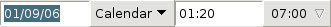
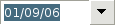

The GnomeDateEdit widget provides a way to enter dates and times
with a helper calendar to let the user select the date.
GTK2.Gnome2DateEdit(time(),1,1);

GTK2.Gnome2DateEdit(time(),0,1);

Properties:
int dateedit-flags
int initial-time
int lower-hour
int time
int upper-hour
Signals:
date_changed
time_changed
 GTK2.Gnome2Client()->set_shutdown_command()
GTK2.Gnome2Client()->set_shutdown_command()